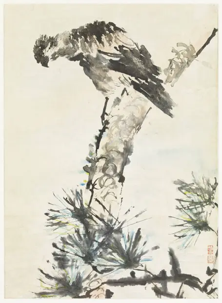

Eagle on a Branch
访问原网页 ↗Visit original website ↗

S019 · Seattle Art Museum · 作品约1928；Ducks约1924—1929
官方馆藏号63.137；用于作品题名、媒材、尺寸、收藏和图片核验。Official collection record 63.137: title, medium, dimensions, collection and images.
馆藏图像与原文Archived images and documents

原始网址Original URL
https://art.seattleartmuseum.org/objects/12968/eagle-on-a-branch